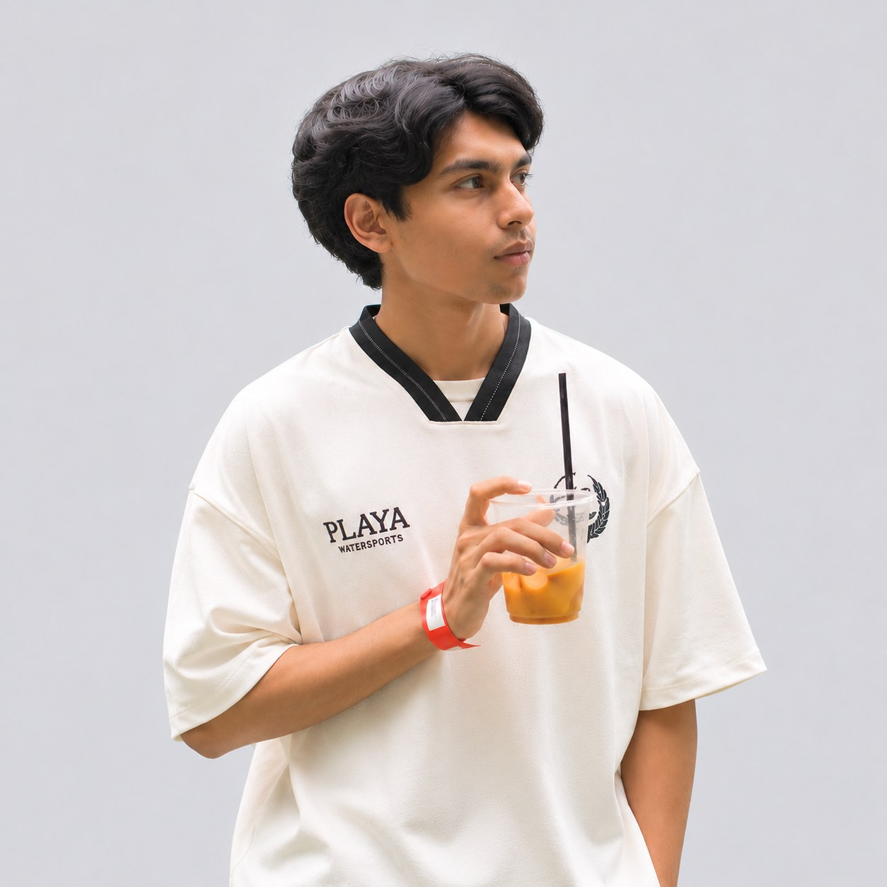
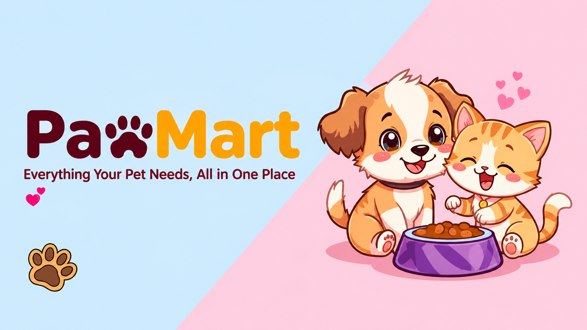
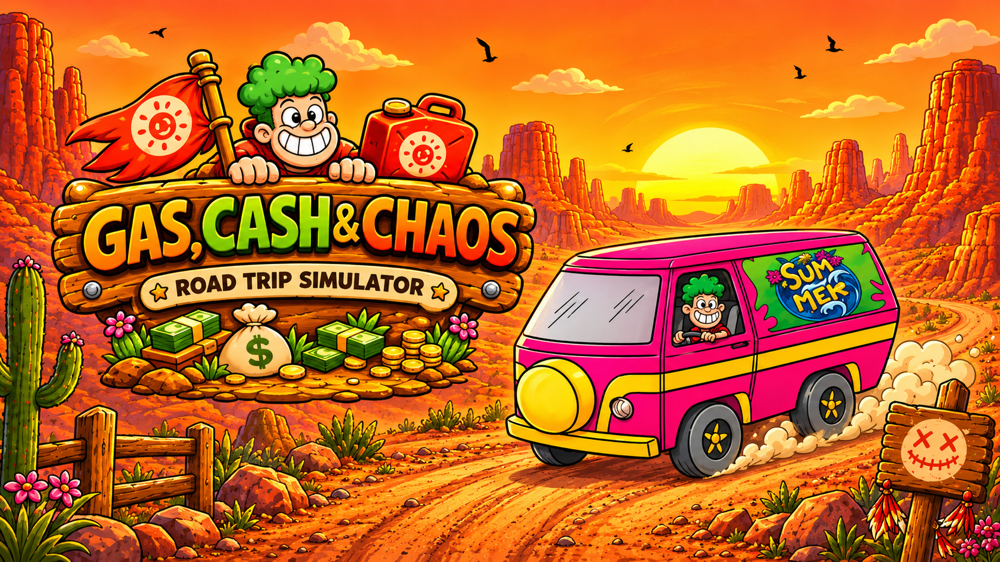

01
Open to jobs & internships
Hi, I’m Tin Tun Aung
I like to build useful things with data, AI & code

Computer Science · AI specialization
Love figuring out how things work, and making them work better.
I’m a final-year Computer Science student at Stamford International University, focused on Data Science and Artificial Intelligence.
My work focuses on web development, AI integration, and database management. I enjoy building practical applications, exploring new technologies, and solving problems through software.
I’m looking for opportunities where I can apply my current skills, learn from experienced teams, and keep growing as a developer.
- Degree
- BSc Computing & Intelligent Systems
- Specialization
- Data Science & Artificial Intelligence
- University
- Stamford International University
- GPA
- 3.81
02 / Technical skills
The tools behind
the work.
02
Data & databases
03
Frameworks & platforms
04
Tools
03 / Featured projects
A few things I've made.
Featured / 01
OpenNews Auditor
An AI-powered web application that evaluates online news reliability, identifies factual claims, gathers supporting evidence, and presents an explainable trust score.

Live project ↗Featured / 02
PawMart
An online pet shop experience for browsing food, toys, and accessories, supported by a product database and a responsive storefront.

Play game ↗Featured / 03
Gas, Cash & Chaos
A browser-based road-trip simulation game with interactive driving, branching storylines, resource management, randomized events, and persistent progress.
Featured / 04
University Registration System
A university registration system project. The supplied repository is retained as the source for implementation details.
04 / Education & certifications
Learning what matters.
Nov 2024 — Present
Bachelor of Science in Computing & Intelligent Systems
Stamford International University
GPA 3.81Completed February 2023
High School Equivalency
General Educational Development (GED)
Certifications
- Java FoundationsOracle Academy
- CS50’s Introduction to Programming with PythonHarvard
- Certificate of Appreciation — Big Buddy Program MentorStamford International University
05 / Contact
Let work together.
I’m open to job and internship opportunities where I can contribute, learn, and grow with a strong team.
atintun100@gmail.com